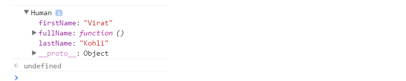

original page
Prototypes in JavaScript
上記記事を自分なりに解釈する為に翻訳してメモ。
（訳が間違っている可能性もあるので、その場合は原文を当たるなりして下さい）
この投稿では、JavaScriptのプロトタイプとは何か、
オブジェクト指向プログラミングの概念を実現するためにJavaScriptがどのように役立つかについて説明します。
前回の投稿では、JavaScriptでオブジェクトを作成するさまざまな方法を学びました。
JavaScriptでオブジェクトを作成する方法の1つは、コンストラクタ関数を使用する事です。
以下のコンストラクタ関数について考慮して下さい。
01 function Human(firstName, lastName) {
02 this.firstName = firstName,
03 this.lastName = lastName,
04 this.fullName = function() {
05 return this.firstName + " " + this.lastName;
06 }
07 }
08
09 var person1 = new Human("Virat", "Kohli");
10
11 console.log(person1)
Humanコンストラクタ関数を使用して、オブジェクトperson1およびperson2を作成しましょう。
var person1 = new Human("Virat", "Kohli");
var person2 = new Human("Sachin", "Tendulkar");
上記のコードを実行すると、JavaScriptエンジンは、それぞれperson1とperson2のコンストラクタ関数の2つのコピーを作成します。
person1: { firstName, lastName, fullName() },
person2: { firstName, lastName, fullName() }
つまり、コンストラクタ関数を使用して作成されたすべてのオブジェクトには、
プロパティとメソッドの独自のコピーがあります。
同じ事を行う関数fullName()の2つのインスタンスを持つ事は意味がありません。
オブジェクトごとに関数の個別のインスタンスを保存すると、メモリが無駄になります。
この問題をどのように解決できるか、今後の課題を検討します。
JavaScriptで関数が作成されると、JavaScriptエンジンはプロトタイププロパティを関数に追加します。
このプロトタイププロパティは、デフォルトでコンストラクタプロパティを持つオブジェクト（プロトタイプオブジェクトと呼ばれます）です。
コンストラクタプロパティは、プロトタイプオブジェクトがプロパティである関数を指します。
functionName.prototypeを使用して、関数のプロトタイププロパティにアクセス出来ます。
上の画像に示すように、Humanコンストラクタ関数には、プロトタイプオブジェクトを指すプロトタイププロパティがあります。
プロトタイプオブジェクトには、Humanコンストラクター関数を指すコンストラクタープロパティがあります。
以下の例を見てみましょう：
function Human(firstName, lastName) {
this.firstName = firstName,
this.lastName = lastName,
this.fullName = function() {
return this.firstName + " " + this.lastName;
}
}
var person1 = new Human("Virat", "Kohli");
console.log(person1)
console.log(person1);

Humanコンストラクタ関数のprototypeプロパティにアクセスするには、次の構文を使用します。
console.log(Human.prototype);
上記の画像からわかるように、関数のプロトタイププロパティは、
2つのプロパティを持つオブジェクト（プロトタイプオブジェクト）です。
オブジェクトがJavaScriptで作成されると、
JavaScriptエンジンは__proto__プロパティをdunder protoと呼ばれる新しく作成されたオブジェクトに追加します。
dunder protoまたは__proto__は、コンストラクタ関数のプロトタイプオブジェクトを指します。

上の画像に示すように、Humanコンストラクタ関数を使用して作成されたperson1オブジェクトには、
コンストラクタ関数のプロトタイプオブジェクトを指すdunder protoまたは__proto__プロパティがあります。
// Create an object person1 using the Human constructor function
var person1 = new Human("Virat", "Kohli");
上の画像から分かるように、person1のdunder protoまたは__proto__プロパティとHuman.prototypeプロパティの両方は同等です。
===演算子を使用して、同じ場所を指しているかどうかを確認しましょう。
Human.prototype === person1.__proto__ // true
これは、person1のdunder protoプロパティとHuman.prototypeが同じオブジェクトを指している事を示しています。
それでは、ヒューマンコンストラクタ関数を使用して別のオブジェクトperson2を作成しましょう。
var person2 = new Human("Sachin", "Tendulkar");
console.log(person2);

上記のコンソール出力は、person2のdunder protoプロパティでさえHuman.prototypeプロパティと等しく、
同じオブジェクトを指している事を示しています。
Human.prototype === person2.__proto__ // true person1.__proto__ === person2.__proto__ // true
上記のステートメントは、person1およびperson2のdunder protoプロパティが
Humanコンストラクター関数のプロトタイプオブジェクトを指している事を証明しています。

コンストラクタ関数のプロトタイプオブジェクトは、
コンストラクタ関数を使用して作成されたすべてのオブジェクト間で共有されます。
プロトタイプオブジェクトはオブジェクトなので、
プロパティとメソッドをプロトタイプオブジェクトにアタッチ出来ます。
したがって、コンストラクタ関数を使用して作成された
すべてのオブジェクトがこれらのプロパティとメソッドを共有出来るようにします。
以下に示すように、ドット表記または角括弧表記のいずれかを使用して、
コンストラクタ関数のプロトタイププロパティに新しいプロパティを追加出来ます。
//Dot notation Human.prototype.name = "Ashwin"; console.log(Human.prototype.name)//Output: Ashwin //Square bracket notation Human.prototype["age"] = 26; console.log(Human.prototype["age"]); //Output: 26 console.log(Human.prototype);

名前（name）と年齢（age）のプロパティがHumanプロトタイプに追加されました。
//Create an empty constructor function
function Person(){
}
//Add property name, age to the prototype property of the Person constructor function
Person.prototype.name = "Ashwin" ;
Person.prototype.age = 26;
Person.prototype.sayName = function(){
console.log(this.name);
}
//Create an object using the Person constructor function
var person1 = new Person();
//Access the name property using the person object
console.log(person1.name)// Output" Ashwin
console.log（person.name）を実行したときに何が起こったかを分析しましょう。
人物オブジェクトに名前プロパティがあるかどうかを確認しましょう。
console.log(person1);

ご覧のとおり、person1オブジェクトは空であり、dunder protoプロパティ以外のプロパティはありません。
では、console.log（person.name）の出力はどのように「Ashwin」でしたか？
オブジェクトのプロパティにアクセスしようとすると、JavaScriptエンジンは最初にオブジェクトのプロパティを見つけようとします。
プロパティがオブジェクトに存在する場合、その値を出力します。
ただし、オブジェクトにプロパティが存在しない場合、
プロトタイプオブジェクトまたはオブジェクトのダンダープロトタイプでプロパティを見つけようとします。
プロパティが見つかった場合、値が返されます。
それ以外の場合、JavaScriptエンジンはオブジェクトのダンダープロトでプロパティを見つけようとします。
このチェーンは、dunder protoプロパティがnullになるまで続きます。これらの場合、出力は未定義（undefined）になります。
したがって、person1.nameが呼び出されると、
JavaScriptエンジンはperson1オブジェクトにプロパティが存在するかどうかを確認します。
この場合、nameプロパティはperson1のオブジェクトにはありませんでした。
そのため、JavaScriptエンジンはnameプロパティがdunder protoプロパティまたは
person1のオブジェクトのプロトタイプに存在するかどうかを確認します。
この場合、nameプロパティは、dunder protoプロパティまたはperson1のオブジェクトのプロトタイプにありました。
したがって、出力は「Ashwin」と返されました。
Personコンストラクタ関数を使用して、別のオブジェクトperson2を作成しましょう。
var person2 = new Person(); //Access the name property using the person2 object console.log(person2.name)// Output: Ashwin
次に、person1オブジェクトのプロパティ名を定義しましょう。
person1.name = "Anil" console.log(person1.name)//Output: Anil console.log(person2.name)//Output: Ashwin
ここでperson1.nameは「Anil」を出力します。
前述のように、JavaScriptエンジンは最初にオブジェクト自体のプロパティを見つけようとします。
この場合、nameプロパティはオブジェクトperson1自体に存在するため、JavaScriptエンジンはperson1のnameプロパティの値を出力します。
person2の場合、nameプロパティはオブジェクトに存在しません。
したがって、person2のプロトタイプオブジェクトのプロパティ名を出力します。
プロトタイプオブジェクトは、コンストラクタ関数を使用して作成されたすべてのオブジェクト間で共有されるため、
そのプロパティとメソッドもすべてのオブジェクト間で共有されます。
オブジェクトAがプリミティブ値を持つプロトタイプのプロパティを変更した場合、
他のオブジェクトは、以下に示すようにオブジェクトAがそのオブジェクトにプロパティを作成するため、影響を受けません。
console.log(person1.name);//Output: Ashwin console.log(person2.name);//Output: Ashwin person1.name = "Ganguly" console.log(perosn1.name);//Output: Ganguly console.log(person2.name);//Output: Ashwin
ここ（1行目と2行目）では、person1とperson2の両方にnameプロパティがないため、
プロトタイプのnameプロパティにアクセスするため、出力は両方とも同じです。
person1は、nameプロパティに別の値を設定する場合、オブジェクトにnameプロパティを作成します。
//Create an empty constructor function
function Person(){
}
//Add property name, age to the prototype property of the Person constructor function
Person.prototype.name = "Ashwin" ;
Person.prototype.age = 26;
Person.prototype.friends = ['Jadeja', 'Vijay'],//Arrays are of reference type in JavaScript
Person.prototype.sayName = function(){
console.log(this.name);
}
//Create objects using the Person constructor function
var person1= new Person();
var person2 = new Person();
//Add a new element to the friends array
person1.friends.push("Amit");
console.log(person1.friends);// Output: "Jadeja, Vijay, Amit"
console.log(person2.friends);// Output: "Jadeja, Vijay, Amit"
上記の例では、person1とperson2は、プロトタイプオブジェクトの同じ友人の配列を指します。
person1は、配列に別の文字列を追加してfriendsプロパティを変更します。
友人の配列はperson1ではなくPerson.prototypeに存在するため、
person1オブジェクトによる友人のプロパティの変更は、person2.friends（同じ配列を指す）にも反映されます。
すべてのインスタンスでアレイを共有する事を目的とする場合、
この結果は問題ありません。しかし、ここではそうではありませんでした。
プロトタイプの問題とコンストラクタの問題を解決するために、
コンストラクタと関数の両方を組み合わせる事が出来ます。
両方の問題を解決するために、以下に示すように、コンストラクタ内のすべてのオブジェクト固有のプロパティと、
プロトタイプ内のすべての共有プロパティとメソッドを定義出来ます。
//Define the object specific properties inside the constructor
function Human(name, age){
this.name = name,
this.age = age,
this.friends = ["Jadeja", "Vijay"]
}
//Define the shared properties and methods using the prototype
Human.prototype.sayName = function(){
console.log(this.name);
}
//Create two objects using the Human constructor function
var person1 = new Human("Virat", 31);
var person2 = new Human("Sachin", 40);
//Lets check if person1 and person2 have points to the same instance of the sayName function
console.log(person1.sayName === person2.sayName) // true
//Let's modify friends property and check
person1.friends.push("Amit");
console.log(person1.friends)// Output: "Jadeja, Vijay, Amit"
console.log(person2.friends)//Output: "Jadeja, Vijay"
ここでは、各オブジェクトに独自の名前、年齢、友人のプロパティを持たせたいと思っています。
したがって、これを使用してコンストラクタ内でこれらのプロパティを定義しました。
ただし、sayName()はプロトタイプオブジェクトで定義されているため、すべてのオブジェクトで共有されます。
上記の例では、person1の友人のプロパティを変更しても、person2の友人のプロパティは変更されませんでした。